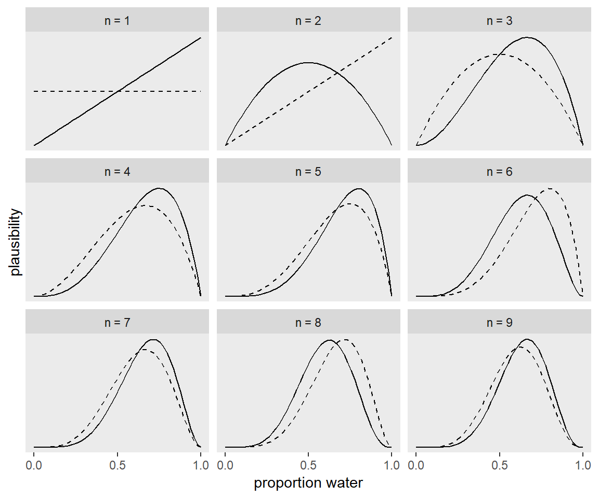
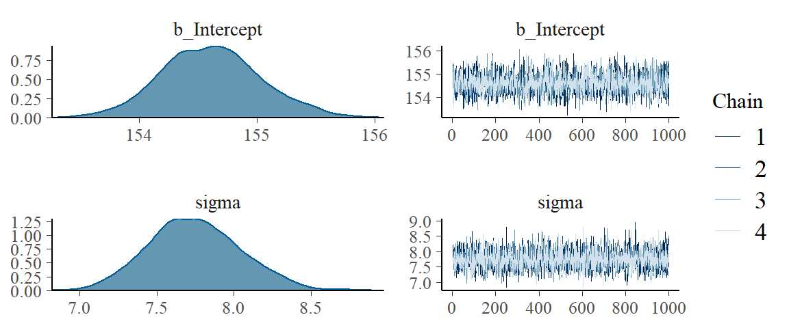
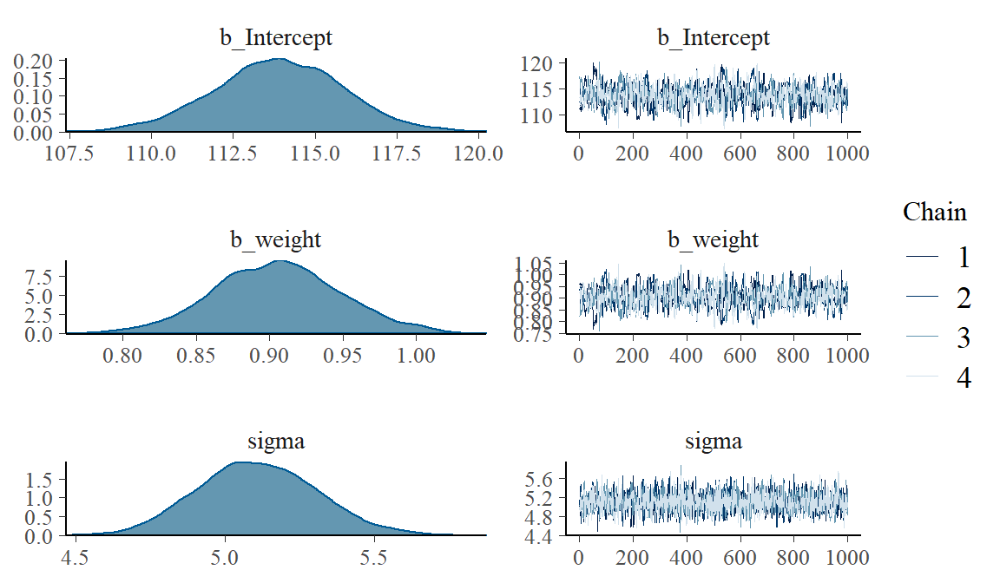

Over ‘Statistical rethinking’ van Richard McElreath (2016).
Over Bayesiaanse statistiek zijn ondertussen verschillende boeken geschreven die jou leren om hiermee te werken. Het boek van Nzoufras (Bayesian modeling using WinBUGS), Lunn et al. (The BUGS Book. A Practical Introduction to Bayesian Analysis), Kéry (Introduction to WinBUGS for ecologists), Broemeling (Bayesian Methods in Epidemiology) en Cowles (Applied Bayesian Statistics) introduceren niet alleen het concept maar laten ook zien hoe je hier als onderzoeker mee kunt werken. Deze wetenschappers gebruiken het programma WinBUGS of OpenBUGS. Jim Alberts (Bayesian Computation with R) en John Kruschke’s (Doing Bayesian Data Analysis) zijn ook wetenschappelijke boeken die deze vorm van onderzoek introduceren, maar zij beiden werken met R. In de serie cursusboeken Bayesiaanse statistiek is het boek van Richard McElreath (Statistical Rethinking. A Bayesian Course with Examples in R and Stan) het meest recent. Het is een echt cursusboek waar je onder begeleiding of zelf mee aan de slag kunt. Het boek zit vol met codes want McElreath is ervan overtuigd dat als je met deze analysetechniek wilt kunnen werken, je ook moet weten hoe je er mee kunt werken. Interessant zoals hij vaststelt dat tegenwoordig studenten computerwijs maar dat zij van computercodes zelf weer betrekkelijk weinig weten. Om daarmee verder te komen, is het nodig dat ze dat wel leren. McElreaths boek is een oefenboek en de lezer wordt expliciet uitgenodigd problemen met de computer uit te werken. Om ermee te werken moet je R en RStudio op de computer installeren, het pakket binnen halen en je moet rstan (een C++ compiler) installeren. McElreath levert er de codes bij en via internet kun je ook nog zijn interesssante colleges volgen. Allemaal geen eenvoudige kost maar degene die er de moeite voor neemt krijgt veel terug voor zijn of haar inspanningen.
De eerste drie hoofdstukken van Statistical rethinking zijn een algemene introductie op Bayesiaanse statistiek. Wetenschappers maken wetenschappelijke modellen die hij ziet als golems, Joodse kleibeeldjes die na de middeleeuwen voor de waarheid stonden en deden wat hen werd opgedragen, althans dat dachten mensen. Wetenschappelijke modellen zijn ook constructen die voor de waarheid staan en een duidelijk doel hebben. Ze berekenen zaken voor ons, voeren indrukwekkende calculaties uit en vinden patronen die anders voor ons onder de oppervlakte zouden blijven. Volgens McElreath is het huidige statistisch instrumentarium te beperkt om antwoorden te geven op complexere zaken waar we tegenwoordig mee worden geconfronteerd. Wetenschap kan deductieve falsificatie, waar wetenschappers na Popper steeds op gewezen hebben, nauwelijks waar maken omdat hypotheses toch iets anders zijn dan modellen die wel te onderzoeken zijn. Modellen kun je toetsen en hypothesen eigenlijk niet. Hoe je de modellen onderzoekt, doet er dan wel toe. In die nieuwe gereedschapskist die ons ter beschikking staat, zitten voor McElreath drie hele duidelijke gereedschappen:
- Baysiaanse data analyse waarbij het gaat om waarschijnlijkheid en waarbij je het aantal mogelijkheden die volgens onze aannames kunnen gebeuren steeds moet tellen. Het is de meest logische en consistente manier om met informatie om te gaan.
- Multilevel modellen waarbij clusters of groepen worden onderscheiden en waarbij steeds andere waarden kunnen gelden juist omdat ze zo bij elkaar horen.
- Model vergelijkingen en informatiecriteria waarbij het gaat om criteria waarmee vergelijkingen worden gemaakt en accuratesse wordt ingeschat.
McElreath begint zijn boek heel eenvoudig. Stel, zo legt hij voor, dat we plastic aardbol hebben (een opblaasbol, zeg maar) en deze een aantal keren in de lucht gooien. We vangen het met een vinger op en kijken wat er onder die vinger zit (water of land). Stel dat we dat negen keer achter elkaar doen en dat deze activiteit dan de volgende gegevens oplevert.
# A tibble: 9 x 1
toss
<chr>
1 w
2 l
3 w
4 w
5 w
6 l
7 w
8 l
9 w Stel dat water het succes is en we negen keer gooien en laten we uitdrukken wat we gevonden hebben:
# A tibble: 9 x 3
toss n_trials n_success
<chr> <int> <int>
1 w 1 1
2 l 2 1
3 w 3 2
4 w 4 3
5 w 5 4
6 l 6 4
7 w 7 5
8 l 8 5
9 w 9 6Als we dat dan vervolgens ook nog in tekeningen uitdrukken, zien die er achtereenvolgens zo een beetje uit:

De Bayesiaanse techniek bestaat steeds uit een vast aantal componenten. Allereerst is er de likelihood en dat zijn de data waar je mee te maken hebt. Hier boven is dat bijvoorbeeld het aantal keren dat je gegooid hebt en de keren dat de vinger water raakt. Dan heb je de parameters waarmee je werkt (bv. aantal keren water en de kans op water). Dan heb je de prior, de inschatting die je van te voren maakt. Als je niks weet kun je zeggen dat de kans op water=.5 (net zo groot als de kans op land). Maar als je weet dat er meer water is dan land kun je zeggen dat de kans op water tussen .5 en .9 ligt. Tot slot is er de posterior, de combinatie van alle drie (likelihood, parameters en prior) en veelal uitgedrukt wordt als:
\[\text{Posterior} = \frac{\text{Likelihood} \times \text{Prior}}{\text{Average Likelihood}}\]
Nu zijn er verschillende technieken om deze posterior uit te rekenen. Om met complexe modellen te kunnen werken,worden MCMC-technieken gebruikt en daar maakt Richard Elreath in zijn boek ruim gebruik van. Als het model dat is gekozen een posterior distributie maakt, is eigenlijk het werk gedaan en kunnen hiermee verschillende vragen worden beantwoord als:
- wat is de kans dat een bepaalde waarde voorkomt?
- wat is de kans dat de waarde tussen 50% en 80% in ligt?
- welke waarde heeft de hoogste posterior waarschijnlijkheid?
etc. Met Bayesiaanse technieken maak je samples die je weer gebruikt om intervallen te definiëren, om puntschattingen te maken, om voorspellingen te doen, om de gegevens op een andere manier te simuleren of wat je ook maar wilt.
Nadat McElreath in het eerste deel van het boek de basis heeft uitgelegd, begint hij in het tweede deel verschillende modellen uit te leggen. Hij begint met betrekkelijk simpele lineaire modellen. Stel dat we een dataset nemen die in het pakket zit. De meest simpele vorm druk je zo uit:
\[ \begin{eqnarray} \text{outcome}_i & \sim & \text{Normal}(\mu_i, \sigma) \\ \mu_i & = & \beta \times \text{predictor}_i \\ \beta & \sim & \text{Normal}(0, 10) \\ \sigma & \sim & \text{HalfCauchy}(0, 1) \end{eqnarray} \] Stel dat we een dataset nemen die in het pakket zit, bv.;
'data.frame': 544 obs. of 4 variables:
$ height: num 152 140 137 157 145 ...
$ weight: num 47.8 36.5 31.9 53 41.3 ...
$ age : num 63 63 65 41 51 35 32 27 19 54 ...
$ male : int 1 0 0 1 0 1 0 1 0 1 ...Dan halen we alleen de variabele lengte eruit:
height
1 151.765
2 139.700
3 136.525
4 156.845
5 145.415
6 163.830Vervolgens gebruiken we alleen de data van de volwassenen:
Hieronder draaien we dan een analyse. En dit wordt steeds op dezelfde manier gedefinieerd. Je definieert het model, dan gebruik je brm en zegt welke data je gebruikt en welke statistische familie je gebruikt, vervolgens definieer je het statistische model, je definieert de parameters die gebruikt, je definieert het aantal iteraties en hoeveel je daarbij als warming up gebruikt, je definieert het aantallen kettingen en het aantal computerdelen.
Laten we zien wat het grafische oplevert:

Laten we de gegevens ook in een tabel samenvatten:
Family: gaussian
Links: mu = identity; sigma = identity
Formula: height ~ 1
Data: d2 (Number of observations: 352)
Samples: 4 chains, each with iter = 2000; warmup = 1000; thin = 1;
total post-warmup samples = 4000
Population-Level Effects:
Estimate Est.Error l-95% CI u-95% CI Eff.Sample Rhat
Intercept 154.61 0.42 153.82 155.47 3481 1.00
Family Specific Parameters:
Estimate Est.Error l-95% CI u-95% CI Eff.Sample Rhat
sigma 7.75 0.30 7.19 8.34 3570 1.00
Samples were drawn using sampling(NUTS). For each parameter, Eff.Sample
is a crude measure of effective sample size, and Rhat is the potential
scale reduction factor on split chains (at convergence, Rhat = 1).Als we aan deze simpele regressie nog een andere, onafhankelijke variabele toevoegen (gewicht), krijgen we de volgende analyse:
Ook hier eerst het grafische:

Family: gaussian
Links: mu = identity; sigma = identity
Formula: height ~ 1 + weight
Data: d2 (Number of observations: 352)
Samples: 4 chains, each with iter = 41000; warmup = 40000; thin = 1;
total post-warmup samples = 4000
Population-Level Effects:
Estimate Est.Error l-95% CI u-95% CI Eff.Sample Rhat
Intercept 113.87 1.95 109.96 117.68 770 1.00
weight 0.91 0.04 0.82 0.99 757 1.00
Family Specific Parameters:
Estimate Est.Error l-95% CI u-95% CI Eff.Sample Rhat
sigma 5.11 0.20 4.73 5.51 2485 1.00
Samples were drawn using sampling(NUTS). For each parameter, Eff.Sample
is a crude measure of effective sample size, and Rhat is the potential
scale reduction factor on split chains (at convergence, Rhat = 1).Nadat McElreath heeft laten zien hoe het werkt met eenvoudige regressies (inclusief interacties dat in het volgende hoofdstuk aan de orde komt), gaat hij in op het gebruik van informatie criteria. Dat zijn criteria waarmee je modellen met elkaar kunt vergelijken. De DIC en WAIC zijn informatiecriteria die in deze techniek het beste te gebruiken zijn.
Laten we eens zien. Haal een dataset binnen, bv. de dataset milk die in het pakket rethinking zit. Daar gebruiken we alleen de complete gegevens van en we passen de variabele neocortex aan.
Hoeveel dimensies d zitten er in:
[1] 17 9Laad dan weer het pakket brms.
We onderzoeken vier verschillende kcal.per.g modellen .
Vervolgens kun je deze vier modellen met elkaar vergelijken en de modellen met de laagste waic-score laat de beste balans zien tussen eenvoud en complexiteit.
WAIC SE
b6.11 -8.73 3.70
b6.12 -7.45 3.19
b6.13 -8.91 4.24
b6.14 -16.94 5.20
b6.11 - b6.12 -1.28 1.16
b6.11 - b6.13 0.17 2.33
b6.11 - b6.14 8.21 4.94
b6.12 - b6.13 1.45 2.99
b6.12 - b6.14 9.49 5.05
b6.13 - b6.14 8.04 3.55Voor Bayesiaanse technieken worden tegenwoordig MCMC-technieken gebruikt die met ingewikkelde random berekeningen als het ware het complexe geheel kunnen opsplitsen in kleinere eenheden. Door dit heel vaak te draaien kunnen de posterior samples worden gemaakt. Met Gibbs en Metropolitan wordt al sinds de negentiger jaren gewerkt. Gelman en anderen hebben de laatste jaren de Hamiltonian Monte Carlo ontwikkelt die nog weer beter werkt in complexe modellen (Stan). Stan heeft weer een eigen taal. Maar met McElreaths MAP en met Brueckners brms pakket kan hier makkelijker mee worden gewerkt. Het betrekkelijke ingewikkelde HMC werkt in deze pakketten achter de coulissen. Laten we een voorbeeld nemen:
We laden eerst de rugged data in.
Dan gaan we over naar brms.
We doen wat data manipulatie.
Vervolgens werken we met HMC en we zien bij het brm-pakket ook weer dezelfde volgorde. Eerst het model definiëren, dan brm en vaststellen welke data je gebruikt en welke statistische familie. Dan schrijf je het model uit en vervolgens definieer je de priors.
SAMPLING FOR MODEL 'ae400a3fc447dbdc9dc2cf4b2f0adb9b' NOW (CHAIN 1).
Chain 1:
Chain 1: Gradient evaluation took 0 seconds
Chain 1: 1000 transitions using 10 leapfrog steps per transition would take 0 seconds.
Chain 1: Adjust your expectations accordingly!
Chain 1:
Chain 1:
Chain 1: Iteration: 1 / 2000 [ 0%] (Warmup)
Chain 1: Iteration: 200 / 2000 [ 10%] (Warmup)
Chain 1: Iteration: 400 / 2000 [ 20%] (Warmup)
Chain 1: Iteration: 600 / 2000 [ 30%] (Warmup)
Chain 1: Iteration: 800 / 2000 [ 40%] (Warmup)
Chain 1: Iteration: 1000 / 2000 [ 50%] (Warmup)
Chain 1: Iteration: 1001 / 2000 [ 50%] (Sampling)
Chain 1: Iteration: 1200 / 2000 [ 60%] (Sampling)
Chain 1: Iteration: 1400 / 2000 [ 70%] (Sampling)
Chain 1: Iteration: 1600 / 2000 [ 80%] (Sampling)
Chain 1: Iteration: 1800 / 2000 [ 90%] (Sampling)
Chain 1: Iteration: 2000 / 2000 [100%] (Sampling)
Chain 1:
Chain 1: Elapsed Time: 0.141 seconds (Warm-up)
Chain 1: 0.105 seconds (Sampling)
Chain 1: 0.246 seconds (Total)
Chain 1:
SAMPLING FOR MODEL 'ae400a3fc447dbdc9dc2cf4b2f0adb9b' NOW (CHAIN 2).
Chain 2:
Chain 2: Gradient evaluation took 0 seconds
Chain 2: 1000 transitions using 10 leapfrog steps per transition would take 0 seconds.
Chain 2: Adjust your expectations accordingly!
Chain 2:
Chain 2:
Chain 2: Iteration: 1 / 2000 [ 0%] (Warmup)
Chain 2: Iteration: 200 / 2000 [ 10%] (Warmup)
Chain 2: Iteration: 400 / 2000 [ 20%] (Warmup)
Chain 2: Iteration: 600 / 2000 [ 30%] (Warmup)
Chain 2: Iteration: 800 / 2000 [ 40%] (Warmup)
Chain 2: Iteration: 1000 / 2000 [ 50%] (Warmup)
Chain 2: Iteration: 1001 / 2000 [ 50%] (Sampling)
Chain 2: Iteration: 1200 / 2000 [ 60%] (Sampling)
Chain 2: Iteration: 1400 / 2000 [ 70%] (Sampling)
Chain 2: Iteration: 1600 / 2000 [ 80%] (Sampling)
Chain 2: Iteration: 1800 / 2000 [ 90%] (Sampling)
Chain 2: Iteration: 2000 / 2000 [100%] (Sampling)
Chain 2:
Chain 2: Elapsed Time: 0.134 seconds (Warm-up)
Chain 2: 0.107 seconds (Sampling)
Chain 2: 0.241 seconds (Total)
Chain 2:
SAMPLING FOR MODEL 'ae400a3fc447dbdc9dc2cf4b2f0adb9b' NOW (CHAIN 3).
Chain 3:
Chain 3: Gradient evaluation took 0.001 seconds
Chain 3: 1000 transitions using 10 leapfrog steps per transition would take 10 seconds.
Chain 3: Adjust your expectations accordingly!
Chain 3:
Chain 3:
Chain 3: Iteration: 1 / 2000 [ 0%] (Warmup)
Chain 3: Iteration: 200 / 2000 [ 10%] (Warmup)
Chain 3: Iteration: 400 / 2000 [ 20%] (Warmup)
Chain 3: Iteration: 600 / 2000 [ 30%] (Warmup)
Chain 3: Iteration: 800 / 2000 [ 40%] (Warmup)
Chain 3: Iteration: 1000 / 2000 [ 50%] (Warmup)
Chain 3: Iteration: 1001 / 2000 [ 50%] (Sampling)
Chain 3: Iteration: 1200 / 2000 [ 60%] (Sampling)
Chain 3: Iteration: 1400 / 2000 [ 70%] (Sampling)
Chain 3: Iteration: 1600 / 2000 [ 80%] (Sampling)
Chain 3: Iteration: 1800 / 2000 [ 90%] (Sampling)
Chain 3: Iteration: 2000 / 2000 [100%] (Sampling)
Chain 3:
Chain 3: Elapsed Time: 0.112 seconds (Warm-up)
Chain 3: 0.12 seconds (Sampling)
Chain 3: 0.232 seconds (Total)
Chain 3:
SAMPLING FOR MODEL 'ae400a3fc447dbdc9dc2cf4b2f0adb9b' NOW (CHAIN 4).
Chain 4:
Chain 4: Gradient evaluation took 0 seconds
Chain 4: 1000 transitions using 10 leapfrog steps per transition would take 0 seconds.
Chain 4: Adjust your expectations accordingly!
Chain 4:
Chain 4:
Chain 4: Iteration: 1 / 2000 [ 0%] (Warmup)
Chain 4: Iteration: 200 / 2000 [ 10%] (Warmup)
Chain 4: Iteration: 400 / 2000 [ 20%] (Warmup)
Chain 4: Iteration: 600 / 2000 [ 30%] (Warmup)
Chain 4: Iteration: 800 / 2000 [ 40%] (Warmup)
Chain 4: Iteration: 1000 / 2000 [ 50%] (Warmup)
Chain 4: Iteration: 1001 / 2000 [ 50%] (Sampling)
Chain 4: Iteration: 1200 / 2000 [ 60%] (Sampling)
Chain 4: Iteration: 1400 / 2000 [ 70%] (Sampling)
Chain 4: Iteration: 1600 / 2000 [ 80%] (Sampling)
Chain 4: Iteration: 1800 / 2000 [ 90%] (Sampling)
Chain 4: Iteration: 2000 / 2000 [100%] (Sampling)
Chain 4:
Chain 4: Elapsed Time: 0.109 seconds (Warm-up)
Chain 4: 0.113 seconds (Sampling)
Chain 4: 0.222 seconds (Total)
Chain 4: En dan, in dit geval alleen, de resultaten voor de tabel.
Family: gaussian
Links: mu = identity; sigma = identity
Formula: log_gdp ~ 1 + rugged + cont_africa + rugged:cont_africa
Data: dd (Number of observations: 170)
Samples: 4 chains, each with iter = 2000; warmup = 1000; thin = 1;
total post-warmup samples = 4000
Population-Level Effects:
Estimate Est.Error l-95% CI u-95% CI Eff.Sample
Intercept 9.22 0.14 8.95 9.49 2923
rugged -0.20 0.08 -0.35 -0.05 2603
cont_africa -1.94 0.23 -2.39 -1.50 2523
rugged:cont_africa 0.39 0.13 0.13 0.65 2377
Rhat
Intercept 1.00
rugged 1.00
cont_africa 1.00
rugged:cont_africa 1.00
Family Specific Parameters:
Estimate Est.Error l-95% CI u-95% CI Eff.Sample Rhat
sigma 0.95 0.05 0.85 1.06 3900 1.00
Samples were drawn using sampling(NUTS). For each parameter, Eff.Sample
is a crude measure of effective sample size, and Rhat is the potential
scale reduction factor on split chains (at convergence, Rhat = 1).Als we met deze MCMC-techniek kunnen werken, kunnen we vervolgens ook andere statistische modellen (GLM-modellen) draaien. Denk aan exponentiële, gamma en poisson distributies en daarmee zijn andere regressies (andere families) mogelijk.
Laten we een logistische regressie als voorbeeld nemen en de chimpanzees data laden.
Dan weer naar brms.
Eerst een logistische regressie met alleen een intercept.
\[ \begin{eqnarray} \text{pulled_left}_i & \sim & \text{Binomial} (1, p_i) \\ \text{logit} (p_i) & = & \alpha \\ \alpha & \sim & \text{Normal} (0, 10) \end{eqnarray} \] En dan weer het model draaien.
Laten we alleen eens naar het intercept kijken.
Estimate Est.Error Q2.5 Q97.5
Intercept 0.32 0.09 0.14 0.5Deze resultaten kunnen ook omgevormd worden tot de logistische functie.
[1] 0.5448789 0.6130142
Estimate Est.Error Q2.5 Q97.5
Intercept 0.5786748 0.5228834 0.5348199 0.6226705Vervolgens voegen we aan het logistisch model enkele predictoren aan toe en draaien nog eens twee modellen.
En dan vergelijken we de drie modellen die we tot dan toe hebben gemaakt met elkaar:
WAIC SE
b10.1 688.00 7.06
b10.2 680.38 9.36
b10.3 682.60 9.46
b10.1 - b10.2 7.62 6.20
b10.1 - b10.3 5.40 6.28
b10.2 - b10.3 -2.22 0.81Op dezelfde manier werkt McElreath ook andere count-regressies en dergelijke uit, waar we hier verder niet op ingaan.
Wanneer hij heeft uitgelegd hoe Bayesiaanse analyse werkt en je ook kunt werken met informatiecriteria, komt hij bij de de multilevel modellen uit (zijn derde uitgangspunt). Multilevel analyse is toch wel zo’n beetje de ‘state of art’ in regressie analyses omdat het enkele voordelen heeft, waaronder:
- het maakt betere schattingen over herhaalde metingen;
- het verbetert de schattingen als er verschillen zijn tussen subsamples en; - het kan variaties en gemiddelden over deze subsamples beter inschatten en het voorkomt zo versimpelen.
Om dit duidelijk te maken onderzoeken we de overleving van kikkers in verschillende omgevingen en definiëren enkele modellen. We werken met de reedfrogs data van het rethinking pakket.
We laten rethinking los en laden brms.
Wat zit er in het reedfrogs-data bestand? Laten we dat eens onderzoeken we met tidyverse pakket.
Observations: 48
Variables: 5
$ density <int> 10, 10, 10, 10, 10, 10, 10, 10, 10, 10, 10, 10, ...
$ pred <fct> no, no, no, no, no, no, no, no, pred, pred, pred...
$ size <fct> big, big, big, big, small, small, small, small, ...
$ surv <int> 9, 10, 7, 10, 9, 9, 10, 9, 4, 9, 7, 6, 7, 5, 9, ...
$ propsurv <dbl> 0.90, 1.00, 0.70, 1.00, 0.90, 0.90, 1.00, 0.90, ...We maken de tank variabele (hogere orde variabele, de omgevingen van de kikker).
Hier is de formule voor het model zonder multilevel karakter nog.
\[ \begin{eqnarray} \text{surv}_i & \sim & \text{Binomial} (n_i, p_i) \\ \text{logit} (p_i) & = & \alpha_{\text{tank}_i} \\ \alpha_{\text{tank}} & \sim & \text{Normal} (0, 5) \end{eqnarray} \]
Hier is de code daarvan:
Vervolgens is hier het multilevel model
\[ \begin{eqnarray} \text{surv}_i & \sim & \text{Binomial} (n_i, p_i) \\ \text{logit} (p_i) & = & \alpha_{\text{tank}_i} \\ \alpha_{\text{tank}} & \sim & \text{Normal} (\alpha, \sigma) \\ \alpha & \sim & \text{Normal} (0, 1) \\ \sigma & \sim & \text{HalfCauchy} (0, 1) \end{eqnarray} \]
En dat multilevel model specificeer je weer zo (inclusief hyperparameter tank:
WAIC SE
b12.1 201.06 9.23
b12.2 200.53 7.21
b12.1 - b12.2 0.53 4.45Naast dat intercept model laat je ook zien dat er verschillen in de slope kunnen zitten. Want qua drukte zijn café’s niet alleen verschillend van elkaar, ook is de drukte over de dag heen (drukte*tijdstip) verschillend. Ook dat kun je in jouw modellen op nemen.
Met het OpenBugs programma weet ikzelf goed te werken en ook werken met het Bayesiaanse MLwiN-deel gaat mij goed af. De laatste jaren wordt er steeds weer met steeds beterem, nieuwe programma’s gewerkt (zoals nu met Stan). Voor mensen die dagelijks met deze programma’s werken is het geen probleem om zich dat eigen te maken. Ikzelf werk er soms mee maar niet dagelijks en dan is het wel een grote inspanning om bij te blijven. Ik heb het idee dat de ontwikkelaars daar niet altijd bij stil staan. In dit blog heb ik gebruik gemaakt van het nieuwe brms-programma van Bürkner. Salomon Kurz heeft dit heel goed voor het boek van McElreath verwerkt (https://bookdown.org/ajkurz/Statistical_Rethinking_recoded/). Toch heb ik van het boek van Richard McElreath heel veel geleerd en ik raad het mensen aan het te lezen.